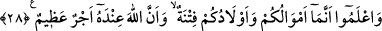

elindeydi. Peygamberimiz Ebû Lübâbe’yi onlara gönderince onlar:
“Ne dersin, Sa‘d’ın hükmüne razı olalım mı?” diye sordular.
Ebû Lübâbe (r.a.) da; Sa’d’ın onlar hakkındaki kararının kesilerek öldürülmeleri
olduğuna işaret etmek üzere boğazını gösterip onun hakemliğine razı olmamalarını îmâ
etti.
Ebu Lübâbe der ki: “Henüz ayaklarımı yerinden kıpırdatmadan Allah ve Rasûlü’ne
ihânet ettiğimi anladım.” Çünkü Rasûlullah (s.a.v.) onlardan Sa‘d’ın haklarında
vereceği hükme razı olmalarını istemiş, o ise onları bundan vazgeçirmişti. İşte bunun
üzerine bu âyet nâzil oldu.
Ebû Lübâbe, kendisini mescidin direğine bağlayıp ölünceye ya da Allah tarafından
affedilinceye kadar yiyip içmeyeceğine yemin etti. Yedi gün sonra bayılıp düştü. Sonra
Allah tevbesini kabul etti. Kendisine tevbesinin kabul edildiği, artık bağlarını çözüp
evine gidebileceği söylenince:
“Hayır vallahi, Rasûlullah (s.a.v.) gelip bağlarımı çözmedikçe buradan ayrılmam.”
dedi. Bunun üzerine Rasûlullah (s.a.v.) gelip bağlarını çözdü.
Ebû Lübâbe: “Tevbemin tamam olması için böyle bir günaha giriftar olduğum
kavmimin bulunduğu bu memleketi terk edeceğim ve malımın tamâmını tasadduk
edeceğim.” deyince Rasûlullah (s.a.v.): “Malının üçte birini tasadduk etmen yeter.”
buyurdu.[22]
Sonra hiyânet ettiğinizi “bile bile kendi” aranızda olan “emanetlerinize hainlik etmiş
olursunuz.” yani, hiyânetiniz sehven değil kasden olur.
28. Bilin ki, mallarınız ve çocuklarınız birer imtihandır ve büyük mükâfat Allah’ın
katındadır.
Önceki âyette hıyaneti yasaklayan Allah Teâlâ, insanı buna iten sebebin o mal ve evlat
sevgisi olduğuna dikkat çekmektedir. Görmez misin ki Ebû Lübâbe’yi Kurayzaoğulları
arasında bulunan malı, âilesi ve çocukları, bu şeye sevketmişti. Bunlar sebebiyle
Kurayzaoğulları’na sır verip müslümanlara ihanet etmişti. İşte bu konuda ikaz
mahiyetinde şöyle buyurulmaktadır:
“Bilin ki, mallarınız ve çocuklarınız birer imtihandır.” Fitne, bazen âfet ve belâ
bazen de ibtilâ ve imtihan anlamında kullanılır. Birincisine göre âyetin mânâsı şöyledir:
“Mallarınız ve çocuklarınız, dünyada günah işlemek ve âhirette de azaba maruz kalmak
demek olan bir âfete düşmenize sebeb olacak unsurlardır.” İkincisine göre ise mânâsı
şöyledir: “Mal ve çocuklar, Allah’ın kullarını imtihan ettiği ve denediği sebeplerdir.
Bunlar vasıtasıyle Allah, hevasına uyanla Mevlâ’sının rızasını tercih edeni birbirinden
ayırır.”